《Nature communication》：PD-1&急性髓细胞性白血病&T Cell
原文：https://mp.weixin.qq.com/s?__biz=MzAwMzIzOTk5OQ==&mid=2247498862&idx=2&sn=1ba36b54428198104c5168d84aba6c51&chksm=9b3c853eac4b0c2874eee3d90b5a989fdc2b366c40805b5041a6f1a588e99b45be14469bdd56#rd 合集：单细胞教程全收录 / 文献速递
Biomamba荐语
这是一篇粉丝来稿，该文献是2021发表在《Nature communication》的《Single cell T cell landscape and T cell receptor repertoire profifiling of AML in context of PD-1 blockade therapy》，文章介绍了在经过PD-1免疫治疗前后AML（急性髓细胞性白血病）病人T亚群和占比的变化，提出可以使用免疫治疗前T细胞克隆型和GZMK CD8+T细胞所占比例来预测免疫治疗的效果。与《NC》一贯的风格一样，该文包含了众多的Figure，但是这篇文章中的图片我个人觉得比较美观，达到了信达雅的标准。并且这是一篇使用monocle3来进行拟时序分析的文章，感兴趣的同学不要错过。
doi:
https://doi.org/10.1038/s41467-021-26282-z
链接：
https://www.nature.com/articles/s41467-021-26282-z
样本来源
● ① 2个健康样本，8个病人，其中病人的不同治疗阶段取样，得到8份治疗前样本和14份治疗后样本，最终得到了13633个细胞的正常样本细胞和60753个细胞的AML病人样本
● ② 经过免疫检验点治疗后有3位病人有治疗效果，3位病人病情持续恶化，2位病人病情稳定
● 文章通过分析样本scRNA和T cell receptor (TCR)去预测肿瘤异质性，由于T细胞免疫应答是免疫治疗的重要指标，因此此处探究了TCR图谱对于免疫治疗的影响
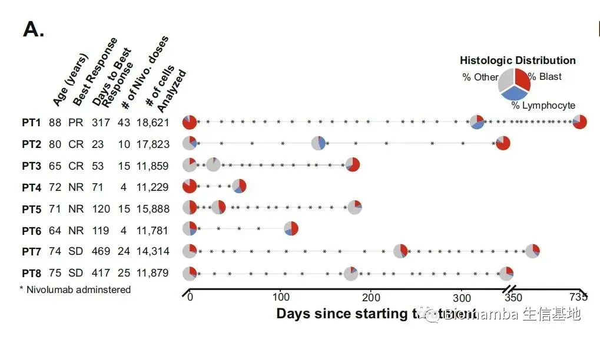
**Results **
● 1 Cluster definitions in healthy and AML BMs(bone marrow)
● 该部分主要介绍了正常样本和病人样本的分群结果。
● ① 健康人细胞分群
根据已知的bone marrow的细胞marker对样本细胞进行细胞注释。
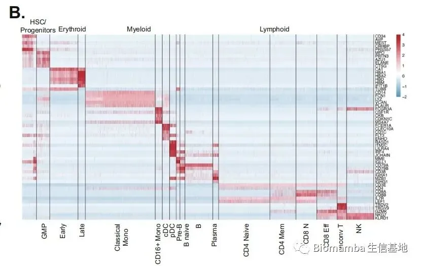
●分群结果
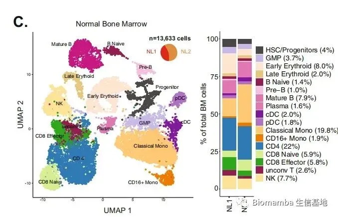
● 将正常人样本与肿瘤病人样本混合后继续分群，验证分群效果是否可靠，可以看出正常样本与肿瘤样本细胞分群结果差异明显。
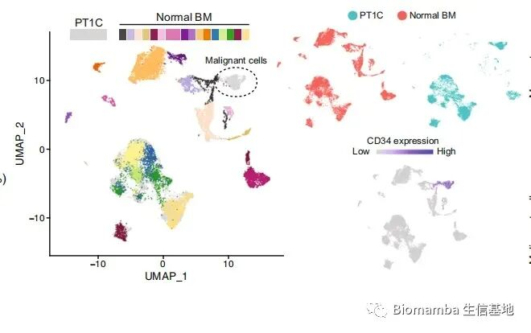
● 对来自不同病人的样本混合，以病人和治疗前后为分群条件，显示不同时间的细胞组分差异。
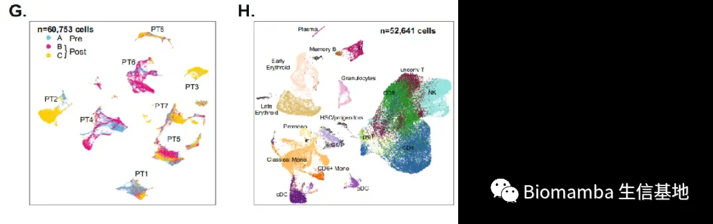
● 通过对不同病人样本单独分析，发现存在肿瘤异质性，可以看到不同病人样本细胞组分差异较大。
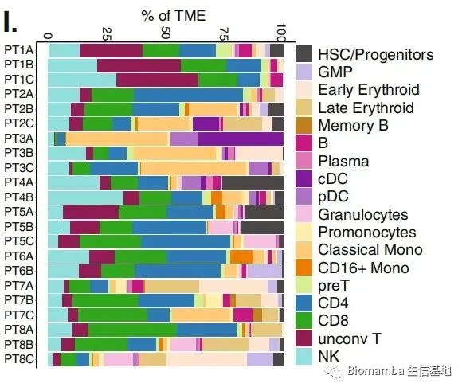
● 2 Variable capacity for TCR clonotype expansions following treatment
● 该部分主要介绍了在免疫治疗前后部分病人T细胞克隆性（个人理解是T细胞表面配受体种类）增加，同时T细胞克隆性增加与治疗效果正相关。
与正常样本比较，AML病人样本中T细胞表面克隆性无论是种类还是数量都增加。

● 同时发现3个有治疗效果（原文说对免疫治疗responders，此处理解为有治疗效果）的病人和2位SD（stable disease）病人他们治疗前数量最多的T细胞随着治疗数量增加，NR（non-responders）治疗前数量最多的T细胞随着治疗数量减少。
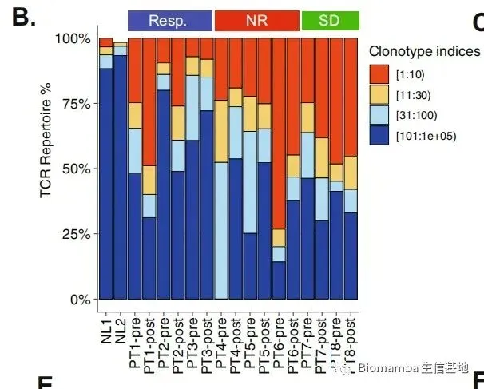
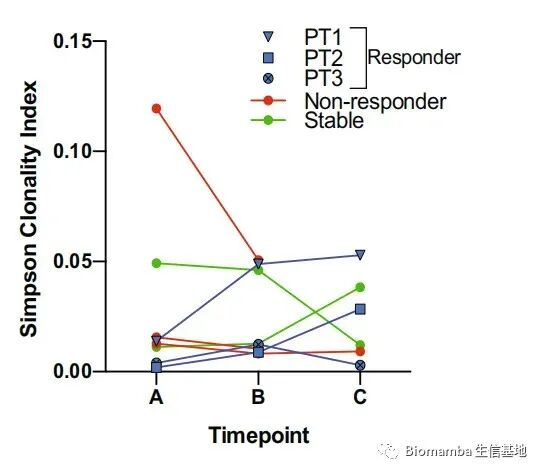
● 这说明在治疗前后T细胞是可变的，不同的T细胞受体克隆型病人对于免疫反应治疗的反应是可变的，这与在原先研究中观察到的肿瘤异质性的结果是相一致的。
● 将所有克隆性比较分析，在治疗后数量增加的克隆型77%来源于responders，18%来源于SD，数量减少的克隆型70%来源于NR和SD病人，所以T细胞表面受体克隆型的变化与治疗效果密切相关。
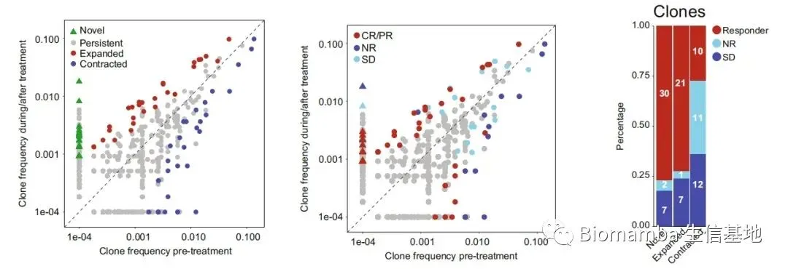
● 3 Heterogeneity in T cell populations of AML patients
● 对T细胞进一步分亚群，统计不同样本中细胞比例，发现不同病人T细胞组成成分的异质性。
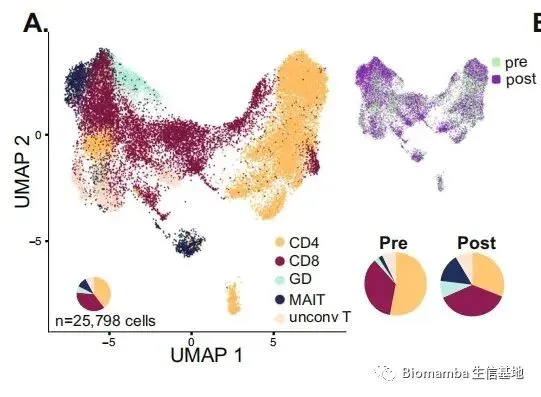
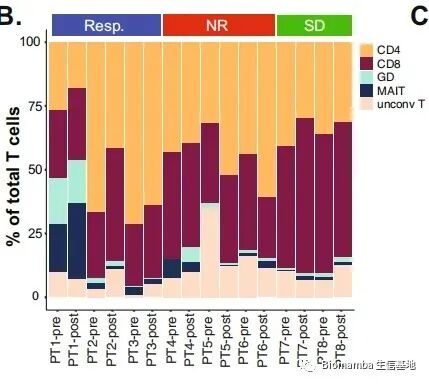
● 可以发现不同细胞比例在治疗前后发生变化（比例分别为治疗前和治疗后细胞类群比例）
CD4+ 53% 30.9%
CD8+ 35% 37.4%
CD4:CD8 ratio 1.51% 0.82%
gamma-delta (γδ) 2.3% 8.5%
invariant T (MAIT) 2.1% 14.4%
(unconv T) 7% 8.5%
● 主要变化是在治疗前后经典的T细胞类群如CD4+和CD8+T细胞含量下降，非经典的T细胞类群如gamma-delta、MAIT等细胞类群上升，同时通过上图可以看出几乎所有的MAIT细胞来自于PT1，说明即使在AML病人中依旧含有肿瘤异质性，这些发现揭示了不同患者和反应组之间的异质性T细胞表型，并揭示了治疗后发生的动态变化。
● 4 Subclassification of T cells reveals distinct cellular phenotypes
● 该部分主要探究了T细胞表型在responders和non-responders样本的差异性。
● 首先根据marker对T细胞（CD4和CD8）分别进行分群，将CD4+ T细胞进一步分为CD4+ naïve、CD4+ FOXP3+ (Treg), T helper 1 cells (TH1)、TH17 cells, and CD4+ cytotoxic (CTL) cells，将CD8+ T细胞进一步分为CD8+ naïve, CD8+ STAT1 (enriched for STAT1 and expressed IFNγ pathway genes), CD8+ GZMK (enriched for GZMK expression), and CD8+ CTL (enriched for cytotoxic markers GZMB, GNLY and PRF1)。
● 同时标记了细胞毒性和细胞耗竭程度，在治疗前，细胞毒性和耗竭分数都要小于治疗后，同时治疗前后CD8+T细胞由naïve细胞向GZMK和CTL状态转变。
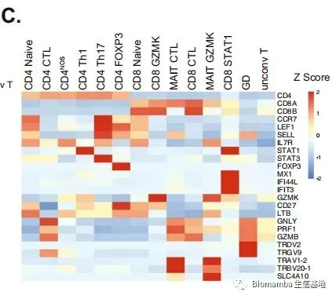
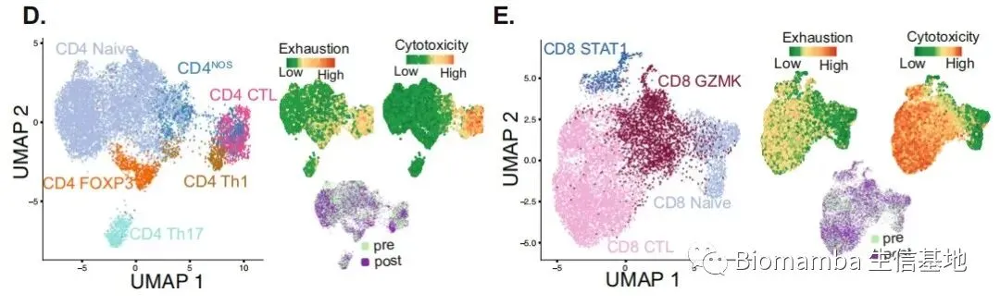
● 实验者发现在responders中CD8+ GZMK在免疫治疗前数量多与NR，但CD8+ CTL数量少于NR，在治疗前，responders的耗竭得分与SD和NR具有显著差异，同时治疗后responders的耗竭系数增加然而NR耗竭系数减少，说明CD8+ GZMK和CD8+ CTL细胞比例对于预测病人治疗情况具有明显帮助。
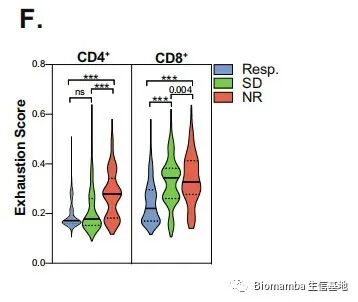
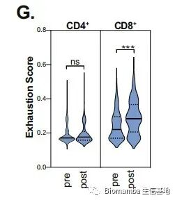
● 根据GZMK含量进行生存分析，发现高表达GZMK含量的病人具有更高的存活率，这表明了有高活性GZMK的免疫系统可以显著改善AML病人的预后能力。
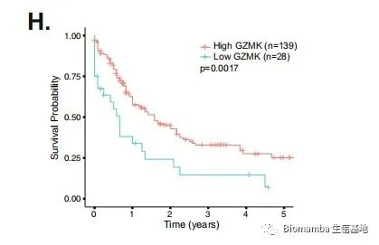
● 5 Pseudotemporal trajectory analysis revealed a CD8+ continuum
● 实验者随后针对CD8+T细胞展开拟时序分析，发现随着拟时间推进，GZMB和GNLY含量升高，同时GZMK表达量降低，这与细胞类型的演化相一致，随着时间的进行，T细胞从GZMK-expressing CD8+逐步走向 CD8+ CTL。
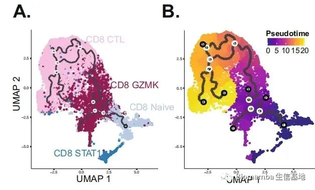
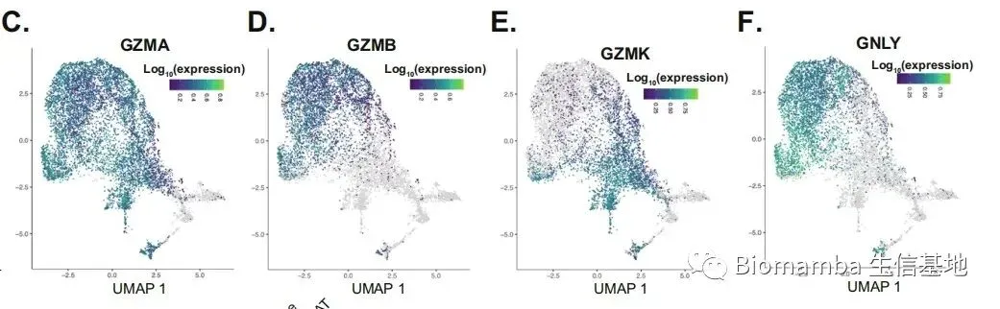
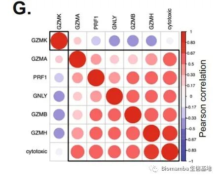
● 实验发现GNLY在CD8+ CTL细胞中表达但是不在CD8+ GZMK细胞中表达，同时GZMK与GZMB,GNLY,PRF1,GZMH和耗竭系数呈现负表达关系，拟时序分析结果表明了在CD8+T细胞变化的连续阶段中会出现一个过渡的、中间态的CD8+ GZMK细胞类群，这个细胞类群高表达GZMK，同时具有stem-like和记忆T细胞所具有的标记。
● 6 GZMK expression delineates MAIT subsets in PT1
● 利用前面GZMK能区分CD8+T细胞的实验结果，进一步探究GZMK能否能够利用来区分其他细胞类型，实验者用GZMK区分MAIT这个T细胞亚群。
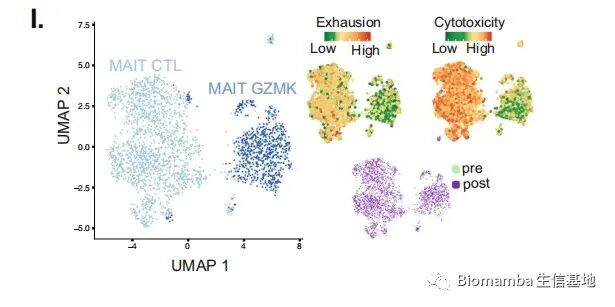
● 将细胞分为两大类
① MAIT GZMK：less exhausted, GZMK-expressing
② MAIT CTL：GNLY/GZMB cytotoxic genes
同时探究了治疗前后两种细胞比例。
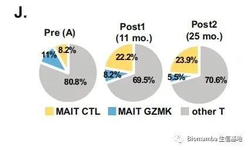
● 实验发现CD8+ and MAIT GZMK细胞含有共同表达的基因如CD27, LTB, TCF7,EOMES，这些基因大多与白细胞的分化，钙信号（细胞因子分泌和细胞毒性）有关，尤其是钙信号能够调节T细胞分化和活化，是实现T细胞功能特异性，并调节细胞因子分泌和细胞毒途径的信号。
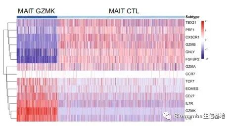
● 7 Shared clonotypes among T cell lineages
● 该部分探究了不同细胞亚群之间共享的配受体克隆型。
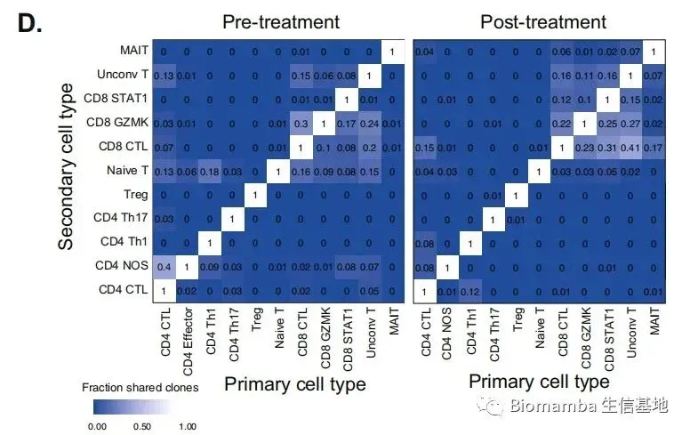
● 实验结果发现在治疗后，不同CD8+T细胞之间共享的配受体克隆型数量增加，这表明经过PD-1 blockade治疗后在密切相关的T细胞谱系中，共享克隆型扩大，因此T细胞能够更早的抗原启动和表型分化。
● 8 Chr7/7q loss is associated with resistance to ICB-based therapy
● 实验者通过CNV分析发现在NR样本中存在染色体chr7/7q区域缺失，缺失区域与mTORC1 signaling, glycolysis, interferon γ (IFNγ) Hallmarks pathways信号通路有关，实验结果证明chr7/7q缺失与免疫抑制微环境有关，chr7/7q的丢失似乎与Treg免疫细胞中富集的免疫抑制环境有关，这使免疫检验点治疗效果不佳。
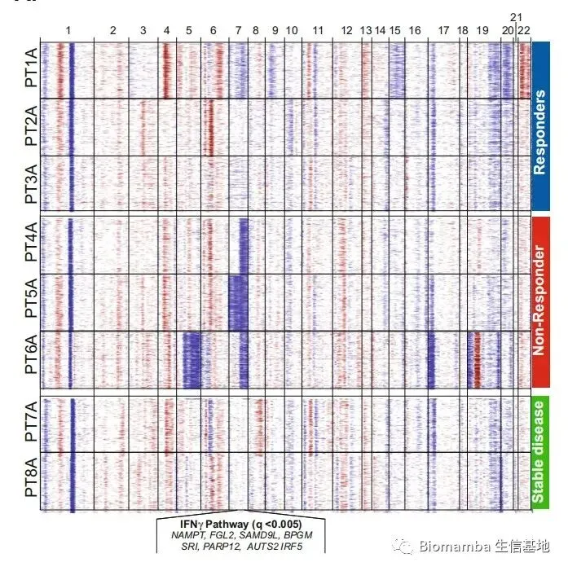
Conclusion
目前在临床试验中，AML患者仅在使用PD-1治疗，在相关的治疗背景下，T细胞生物学、亚群和TCR基因序列对治疗的反应的认识存在差距，这些数据为深入了解T细胞和AML细胞的分子动力学建立了一个框架，从而制定最佳的治疗方法，以提高治疗的疗效和结果。
参考文献
1. Binnewies, M. et al. Understanding the tumor immune microenvironment
(TIME) for effective therapy. Nat. Med. 24, 541–550 (2018).
2. Vadakekolathu, J. et al. Immune landscapes predict chemotherapy resistance
and immunotherapy response in acute myeloid leukemia. Sci. Transl. Med. 12,
eaaz0463 (2020).
3. Horowitz, M. M. et al. Graft-versus-leukemia reactions after bone marrow
transplantation. Blood 75, 555–562 (1990).
4. Hodi, F. S. et al. Improved survival with ipilimumab in patients with
metastatic melanoma. N. Engl. J. Med. 363, 711–723 (2010).
5. Borghaei, H. et al. Nivolumab versus docetaxel in advanced nonsquamous
non-small-cell lung cancer. N. Engl. J. Med. 373, 1627–1639 (2015).
6. Larkin, J. et al. Combined nivolumab and ipilimumab or monotherapy in
untreated melanoma. N. Engl. J. Med. 373, 23–34 (2015).
7. Garon, E. B. et al. Five-year overall survival for patients with advanced non‒
small-cell lung cancer treated with pembrolizumab: results from the phase I
KEYNOTE-001 study. JCO JCO.19.00934–11 https://doi.org/10.1200/
JCO.19.00934 (2019).
8. Davids, M. S. et al. Ipilimumab for patients with relapse after allogeneic
transplantation. N. Engl. J. Med. 375, 143–153 (2016).
9. Daver, N. et al. Effificacy, safety, and biomarkers of response to azacitidine and
nivolumab in relapsed/refractory acute myeloid leukemia: a nonrandomized,
open-label, phase II study. Cancer Discov. 9, 370–383 (2019).
10. Sade-Feldman, M. et al. Defifining T cell states associated with response to
checkpoint immunotherapy in melanoma. Cell 175, 998–1013.e20 (2018).

如何联系我们
 公众号后台消息更新不及时，超过48h便不允许回复读者消息，这里给大家留一下领取资料、免费服务器的微信号 ，方便各位随时交流、提建议(科研任务繁重，回复不及时请见谅)。此外呼声一直很高的交流群 也建好了，欢迎大家入群讨论：永久免费的千人生信、科研交流群
公众号后台消息更新不及时，超过48h便不允许回复读者消息，这里给大家留一下领取资料、免费服务器的微信号 ，方便各位随时交流、提建议(科研任务繁重，回复不及时请见谅)。此外呼声一直很高的交流群 也建好了，欢迎大家入群讨论：永久免费的千人生信、科研交流群
大家可以阅读完这几篇之后添加给生信入门初学者的小贴士 如何搜索公众号过往发布内容

 您点的每个赞和在看，我都认真当成了喜欢
您点的每个赞和在看，我都认真当成了喜欢